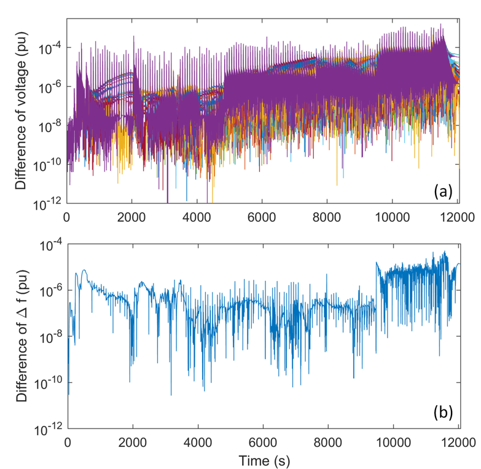

Tutorials
- Integrated restoration optimization model produces an initial parallel recovery plan
- Cranking path module finds transmission path to energize to crank a generator
- Transient stability and static security constraints are validated by simulation
- Three options to fix a restoration plan
- Add compensation devices
- Switch to another cranking path
- Re-optimize startup sequences
- If a restoration plan cannot be repaired (or sacrifice too much solution quality), remove current plan from solution space and resolve the integrated restoration optimization model
Restoration Plan Optimization
Interactive Usage
We can load and use the package using:
cd(@__DIR__)
push!(LOAD_PATH,"../src/")
using EGRIPFirst, we need to tell the package where our problem data is. Assume the data is at the same directory of the executing script, then the data can be loaded as:
dir_case_network = "case39.m"
dir_case_blackstart = "BS_generator.csv"Second, we need to tell the package where our results are going to be stored. Let's save the results in a child folder results:
dir_case_result = "results/"Then, we define the restoration duration and time steps:
t_final = 300
t_step = 100At last, we set the gap for the solver:
gap = 0.15Once everything is ready, we can call solve_restoration function to solve the problem:
solve_restoration(dir_case_network, dir_case_blackstart, dir_case_result, t_final, t_step, gap)Part of the results will be printed once the algorithm terminates.
Line energization:
stage 1.0:
stage 2.0:
stage 3.0: (8,9) (25,37) (16,17) (20,34) (22,23) (19,20) (22,35) (6,11) (9,39) (13,14) (5,8) (19,33) (26,27) (14,15) (12,13) (10,13) (15,16) (16,24) (12,11) (29,38) (16,19) (23,36) (6,31) (26,29) (23,24) (5,6) (4,14) (17,27) (25,26)
Generator energization:
stage 1.0: 39
stage 2.0:
stage 3.0: 36 33 38 31 37 34 35
Bus energization:
stage 1.0: 12 1 11 39 19 20 13
stage 2.0: 18 16 5
stage 3.0: 2 21 7 26 25 35 34 29 10 9 17 8 22 6 24 4 37 28 38 23 31 14 27 36 15 33Detailed results will be stored in results folder under the directory containing the case file.
Command Line Usage
Alternatively, we can build a command-line tool. First, we create a script file named solve_bs.jl and write the following Julia code in the script:
cd(@__DIR__)
push!(LOAD_PATH,"../src/")
using EGRIP
dir_case_network = ARGS[1]
dir_case_blackstart = ARGS[2]
dir_case_result = ARGS[3]
t_final = parse(Int64, ARGS[4])
t_step = parse(Int64, ARGS[5])
gap = parse(Float64, ARGS[6])
solve_restoration(dir_case_network, dir_case_blackstart, dir_case_result, t_final, t_step, gap)Open Terminal and navigate to the directory containing solve_bs.jl.
$ cd /path to solve_bs/Execute the following command:
$ julia solve_bs.jl 'case39.m' 'BS_generator.csv' 'results/' 300 100 0.15Restoration Plan Verification
Restoration Plan File Generation
This process consists of two steps. The first step is to generate restoration plan file (an event list) using the function generateRestorationPlanFromOpt. We need the following inputs:
optResPath: The path containing the optimized restoration plan resultoutFileName: the name of the restoration plan file to be generateddataFile: The name of the associated system data file (PSAT format, .m)dataPath(optional): the path of the datafileOptions(optional): extra options
The function will output exitflag, which 1 means success and fail otherwise. The function can be called using the following command:
generateRestorationPlanFromOpt('D:\Box Sync\Blackstart_data\Blackstart_data\','restoration_plan_test_039.m','d_datane_39_mod_PQ_3')Simulation
Once the event list is generated, we can run the simulation using the function runDynamicSimulation. We need the following inputs:
dataFile: The name of the associated system data file (PSAT format, .m)restSettingFile: the name of the restoration plan filedataPath(optional): the path of the datafileOptions(optional): extra options
There will be two outpus:
exitflag=1: run the whole simulation, otherwise: DSA did not finish all the simulationmsg: detailed message
The function can be called using the following command:
[flag,msg]=runDynamicSimulation('d_datane_39_mod_PQ_3','restoration_plan_test_039')Plots
Once the simulation is completed, we could load the simulation data:
Load the *_simp.mat result file (located in ./restoration/)and plot the results:
plotCurves(1,t,stateCurve,SysDataBase,’variableName’)The results of the IEEE 39-bus system are shown below. 